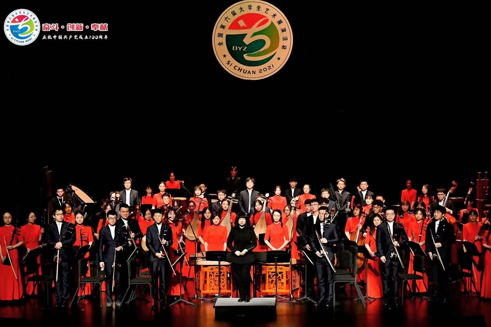
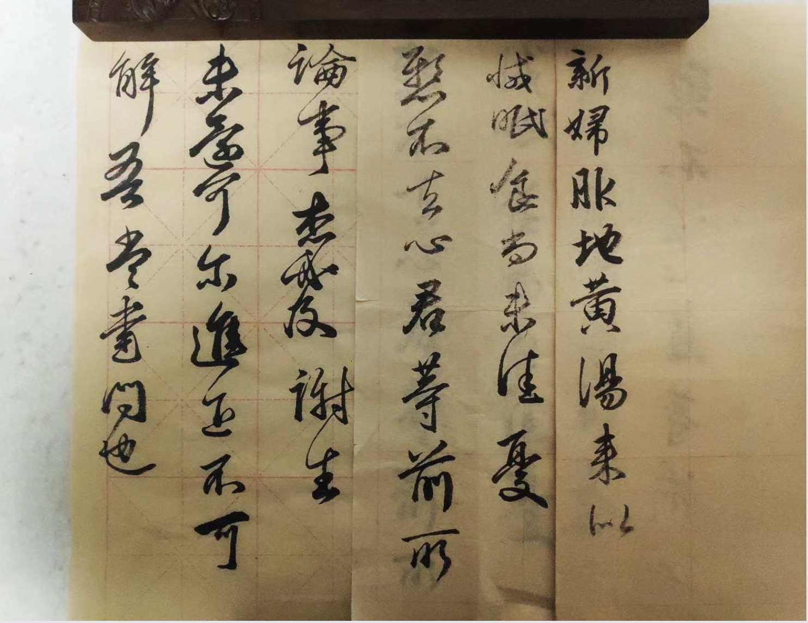

Pan Xiao (潘啸)

-
I am a second-year Ph.D. student at the college of Computer Science and Technology (CST) at Zhejiang University, supervised by Prof. Yi Yang and Jingren Zhou. I received my B.E. degree from the college of Control Science and Engineering (CSE) at Zhejiang University in 2019, supervised by Prof. Jianming Zhang and Prof. Wei Jiang. I spent two more years (2019 - 2021) in CSE as a postgraduate before transferring to CST for pursuing a Ph.D.. I am currently a research intern in Alibaba DAMO Academy.
- Email: xiaopan@zju.edu.cn
- Google Scholar: here
Research Interest
- Computer Vision; Person Re-identification; Video Object Segmentation; 3D Reconstruction;
Publication
-
[PR 2023] Dynamic Gradient Reactivation for Backward Compatible Person Re-identification
Xiao Pan, Hao Luo, Weihua Chen, Fan Wang, Hao Li, Wei Jiang, Jianming Zhang, Jianyang Gu, Peike Li
-
[ICCV 2023] TransHuman: A Transformer-based Human Representation for Generalizable Neural Human Rendering
Xiao Pan, Zongxin Yang, Jianxin Ma, Chang Zhou, Yi Yang
-
[ACM MM 2022] In-N-Out Generative Learning for Dense Unsupervised Video Segmentation
Xiao Pan, Peike Li, Zongxin Yang, Huiling Zhou, Chang Zhou, Hongxia Yang, Jingren Zhou, Yi Yang
-
[KBS 2022] SFGN: Representing the Sequence with One Super Frame for Video Person Re-identification
Xiao Pan, Hao Luo, Wei Jiang, Jianming Zhang, Jianyang Gu, Peike Li
-
[KBS 2022] Dynamic graph transformer for 3D object detection
Siyuan Ren, Xiao Pan, Wenjie Zhao, Binling Nie, Bo Han
Education
- B.E. College of Control Science and Engineering, Zhejiang University, 2015 - 2019
- M.E. College of Control Science and Engineering, Zhejiang University, 2019 - 2021
- Ph.D. College of Computer Science and Technology, Zhejiang University, 2021 - Present
Experience
- Research Intern, Alibaba DAMO Academy, 2021.6 - Present
Miscs
- I started to play ErHu (one of the most ancient Chinese traditional instruments with two strings) when I was 4 years old, taught by my father. I was the head and concert master of Wenqin National Orchestra of Zhejiang University, where I spent 6 enjoyable years (2015 - 2021) and made many friends for life.

- I am interested in Chinese calligraphy, and practice it sometimes.

- I also take photographs in my spare time.